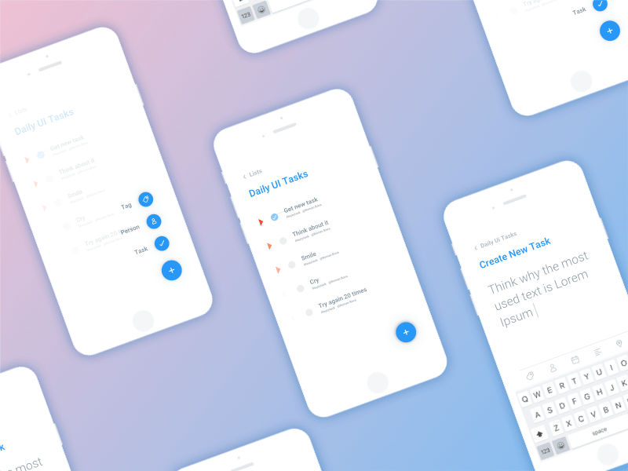

To-Do List Application
This To-Do List application was developed as part of my internship at CognoRise
The application includes features such as task creation, editing, deletion, and prioritization, making it a versatile tool for personal productivity. Users can mark tasks as complete, set deadlines, and organize their to-dos in a user-friendly manner.
I worked on this project for about a month, focusing on implementing key functionalities and optimizing the user experience. This task provided valuable insights into app development, data management, and UI/UX design, enhancing my overall technical expertise.
Technologies:
- - Java
- - Android Studio
- - XML (for UI design)
- - SQLite (for task data storage)
- - Git (for version control)